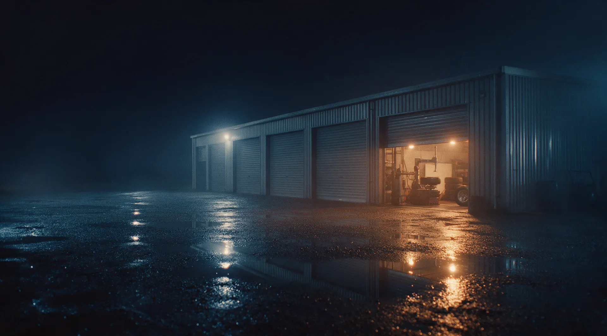
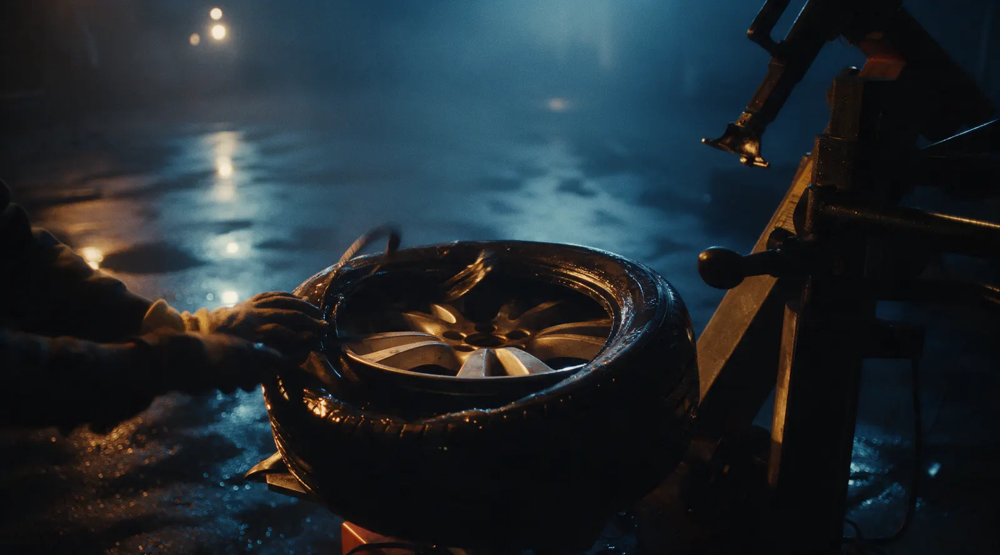
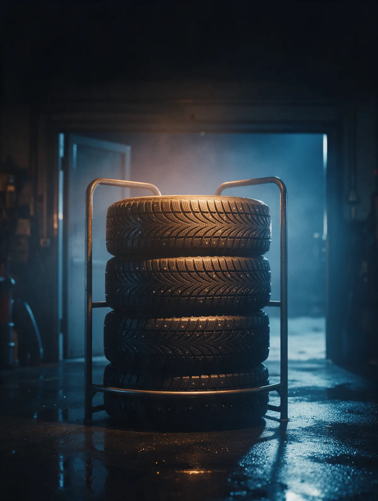

Шиномонтаж · Томск, Сибирская, 79Б
Шиномонтаж в Томске – переобуем без живой очереди
Запись на ваше время, переобувка с балансировкой, ремонт проколов и грыж. Каждый день с 9:00 до 22:00.
- Переобувка с балансировкой
- Ремонт проколов, замена шины с грыжей на месте
- Дошиповка зимних шин

Что делаем при переобувке
Входит
- Снимаем и ставим колёса
- Перебортировка
- Балансировка каждого колеса
- Проверяем шины и показываем, если нашли грыжу или прокол
Отдельно, если нужно
- Ремонт прокола – отдельная услуга
- Дошиповка – отдельная услуга
Услуги и цены
Точную цену назовём при записи – в WhatsApp или по телефону.
Шиномонтаж
- Переобувка комплектаснять, перебортировать, отбалансировать, поставитьуточнить
- Перебортировка с балансировкойуточнить
- Балансировкауточнить
Ремонт
- Ремонт проколауточнить
- Замена шины с грыжейуточнить
- Дошиповка зимних шинуточнить
Постоянным клиентам – скидка.
Как проходит
- 01
Записались и выбрали время
Здесь на сайте или в WhatsApp, за минуту.
- 02
Приехали на Сибирскую, 79Б
Бокс шиномонтажа в здании с автомойкой.
- 03
Переобуваем и проверяем колёса
Если нашли проблему – покажем и объясним.
- 04
Забираете машину
Колёса отбалансированы, можно ехать.


За что нас хвалят
Быстро, даже в сезон
Запишитесь на своё время – и не стойте в живой очереди.
Объясняем и показываем
Что случилось с колесом и как его беречь дальше.
Решаем на месте
Нашли грыжу – меняем шину сразу, пробили – ремонтируем.
Скидка постоянным
К нам переобуваются годами – это ценим.
Отзывы с Яндекс.Карт
«Все быстро, качественно.Роман все объясняет, показывает, даёт советы, нашли сразу причину, устранили! Как собеседник приятный собеседник, все идеально! Всем советую этот шиномонтаж! Процветания в бизнесе!»
Екатерина Руденко · 29 января
«Отличный шиномонтаж! Пробили сильно колесо неподалеку. Мужчина мастерски решил нашу проблему, дал советы. Демократичные цены. По поводу колёс будем обращаться теперь только сюда. Спасибо🙏🏻»
Ирина Дутова · 3 апреля 2024
«Спасибо мастеру за быстрое решение проблемы , выявили грыжу на колесе и сразу поменяли на месте , спасибо большое»
Павел Ермаков · 14 августа
Отзывы с карточки на Яндекс.Картах, без правок.
Частые вопросы
Когда вы работаете?
Каждый день с 09:00 до 22:00.
Можно приехать с пробитым колесом без записи?
Да, напишите в WhatsApp или позвоните – скажем, когда подъехать.
Делаете дошиповку?
Да, дошиповку зимних шин делаем.
Как записаться?
Выберите услугу, день и время в форме на сайте – запись уйдёт нам в WhatsApp.
Запишитесь к своему времени
- Адрес
- Сибирская улица, 79Б, Томск
- Часы
- Ежедневно 09:00–22:00
- Телефон
- +7 (913) 802-17-24